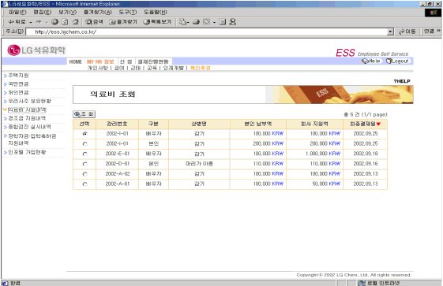
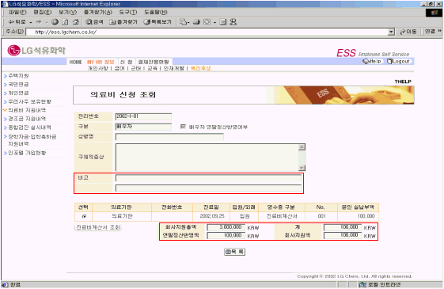

| Ⅱ. 화면사용법 및 유의사항 |
| <그림 1. 의료비 지원내역 목록 화면> |
|  |
| |
| 1) 각 항목을 선택하고 조회버튼을 누르면 의료비 지원을 받은 상세 내역을 조회할 수 있다. |
| |
| <그림 2. 의료비 지원내역 상세조회 화면> |
|  |
| |
| 1) 회사 지원액은 본인이 신청한 의료비에 대해 회사에서 최종 지원해준 금액이다. |
| 2) 비고는 개인의 신청금액에 대해 회사에서 지원해주는 금액이 다를 경우 의료비 담당자가 입력한 |
| 사유를 보여준다. |
| 3) 영수증구분이 진료비계산서일 경우에는 진료비계산서 조회버튼을 눌러 상세 내역을 조회한다. |
| 4) 배우자의 경우 회사지원 총액은 해당년도 내에 회사에서 지원한 총액을 보여준다. |
| |